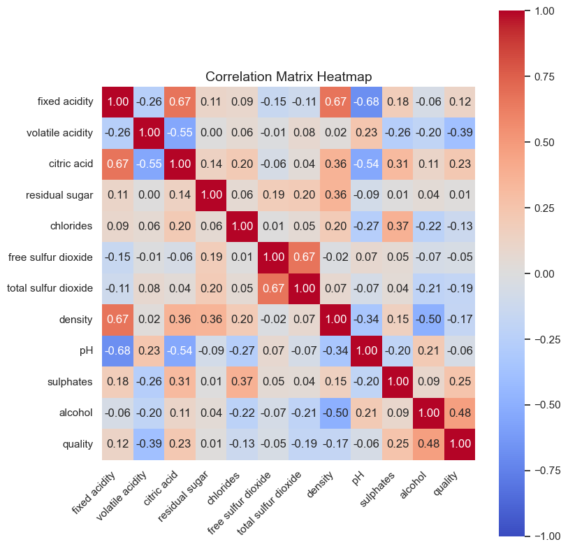
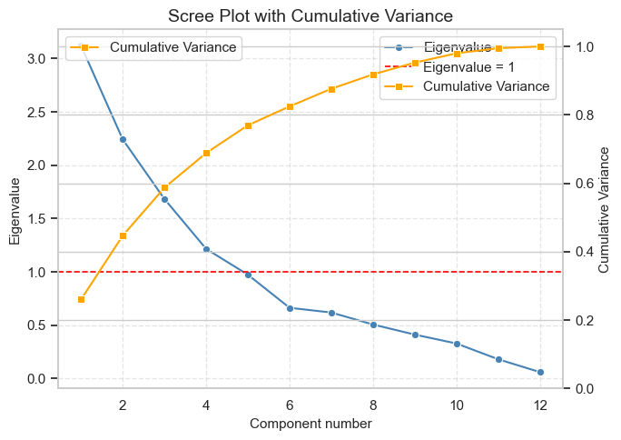
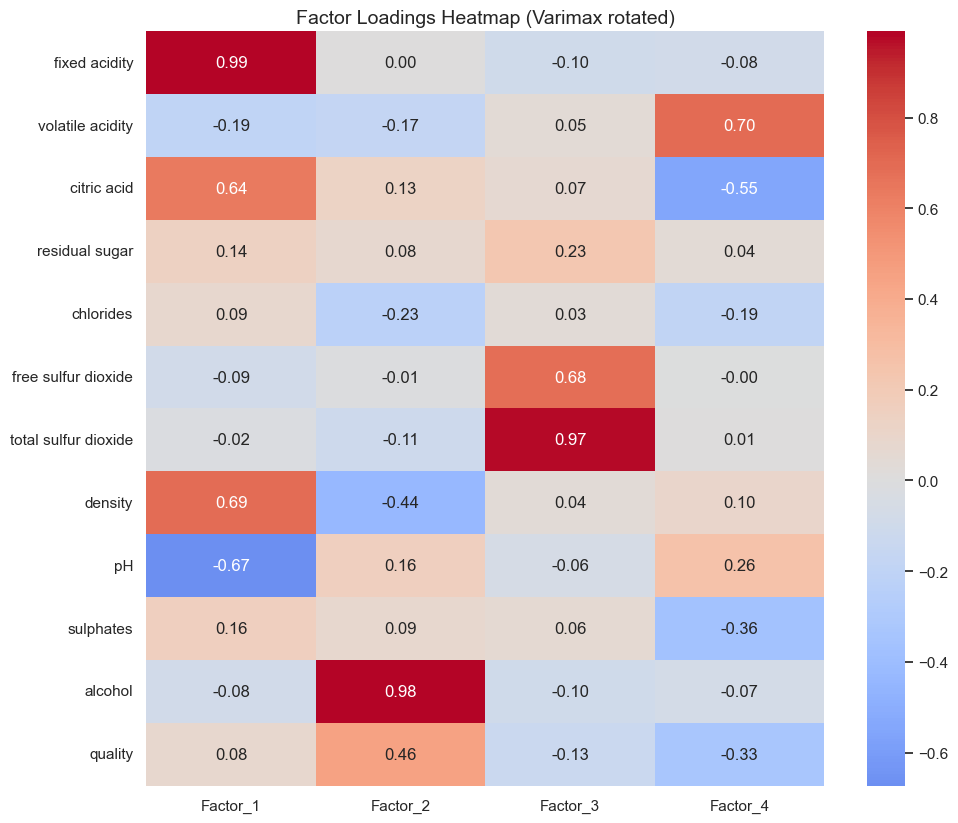
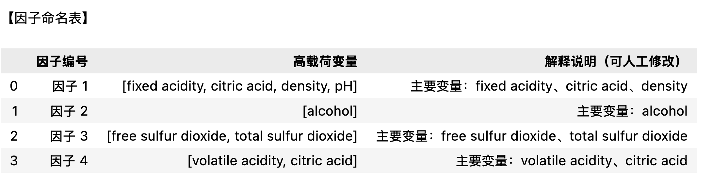

因子分析¶
因子分析是一种多变量统计方法，用于研究多个观测变量之间的相关结构，从中提取出少数几个能够解释这些变量共同变化的潜在因子（latent factors）。
它的基本思想是：
一组高度相关的变量往往受到某些共同潜在因素的影响，因子分析通过数学方法将这些潜在因素提取出来，以揭示数据的内在结构。
因子分析不是为了预测，而是为了“发现结构”。它告诉我们，哪些变量是一类（由同一个潜在因子驱动），以及这些潜在因子各自代表什么。
因子分析步骤¶
1. 数据准备与标准化¶
目的：消除量纲影响，使不同指标可比。
操作：使用 StandardScaler 或 Z-score 标准化。
输出图表：
相关矩阵热图（Correlation Heatmap）
用于直观观察变量间相关性是否较强（适合做因子分析）。
2. 适用性检验¶
目的：判断数据是否适合做因子分析。
操作：
KMO 检验（Kaiser-Meyer-Olkin）
Bartlett 球形检验
结果解释：
KMO > 0.6 表示适合；
Bartlett 检验显著（p < 0.05）表示相关性足够。
输出表格：
KMO 值和 Bartlett 检验结果表。
3. 提取因子（Factor Extraction）¶
目的：确定潜在因子数量。
方法：主成分法（Principal Component）或最大似然法（ML）。
输出图表：
碎石图（Scree Plot）：展示特征值（Eigenvalues）的下降趋势，确定拐点位置。
累计方差贡献率图（Cumulative Variance Plot）
4. 因子旋转（Factor Rotation）¶
目的：让因子结构更清晰（每个变量主要载荷在一个因子上）。
方法：常用 Varimax（正交旋转）或 Oblimin（斜交旋转）。
输出表格：
因子载荷矩阵（Factor Loadings Table）
若有旋转前后对比，也可输出两张表比较。
输出图表：
因子载荷热图（Factor Loadings Heatmap）
用颜色显示变量在不同因子上的载荷强度。
5. 因子得分计算（Factor Scores）¶
目的：计算每个样本在各因子上的得分。
输出图表：
因子得分散点图（Factor Score Scatter Plot）
可用前两个因子作坐标轴，展示样本聚类特征。
6. 因子解释与命名¶
目的：根据高载荷变量解释每个因子的含义。
输出表格：
因子命名表（列出每个因子对应的高载荷变量及解释）。
可视化图表总结表¶
步骤 |
图表类型 |
图表内容 |
工具（Python） |
|---|---|---|---|
1 |
相关矩阵热图 |
各变量之间的相关性 |
sns.heatmap(corr) |
2 |
KMO & Bartlett表 |
检验统计结果 |
factor_analyzer.calculate_kmo, calculate_bartlett_sphericity |
3 |
碎石图 |
特征值趋势确定因子数 |
plt.plot(eigenvalues) |
3 |
累计方差贡献图 |
解释方差占比 |
plt.bar() |
4 |
因子载荷热图 |
各变量在因子上的权重 |
sns.heatmap(loadings) |
5 |
因子得分散点图 |
样本分布 |
plt.scatter(scores[:,0], scores[:,1]) |
6 |
因子解释表 |
各因子的含义说明 |
pd.DataFrame |
代码¶
# =========================================================
# 因子分析（以 winequality-red.csv 为例，Seaborn 绘图版）
# 特点：
# - 中文注释 + 英文图表
# - 包含 Correlation Heatmap
# - Scree Plot 含累计方差曲线与红线（Eigenvalue=1）
# - 因子提取与 Varimax 旋转
# =========================================================
import os
import numpy as np
import pandas as pd
import seaborn as sns
import matplotlib.pyplot as plt
from sklearn.preprocessing import StandardScaler
from sklearn.decomposition import FactorAnalysis
# -----------------------------
# 0) 数据读取与预处理
# -----------------------------
sns.set_theme(style="whitegrid")
CSV_PATH = "winequality-red.csv" # 请修改为你的路径
if not os.path.exists(CSV_PATH):
raise FileNotFoundError("请将 winequality-red.csv 放在脚本同目录下。")
# 读取 UCI 红酒数据（分号分隔），仅保留数值列
df = pd.read_csv(CSV_PATH, sep=";").select_dtypes(include=[np.number]).dropna()
cols = df.columns.tolist()
p = len(cols)
# 标准化数据
scaler = StandardScaler()
X_std = scaler.fit_transform(df)
R = np.corrcoef(X_std, rowvar=False)
n = X_std.shape[0]
# -----------------------------
# 1) 相关性热图 (Correlation Matrix Heatmap)
# -----------------------------
# 说明：因子分析前通常需查看变量之间的相关程度
plt.figure(figsize=(0.45 * p + 3, 0.45 * p + 3))
ax = sns.heatmap(pd.DataFrame(R, index=cols, columns=cols),
cmap="coolwarm", vmin=-1, vmax=1, square=True,
annot=True, fmt=".2f", cbar=True)
ax.set_title("Correlation Matrix Heatmap", fontsize=14)
ax.set_xticklabels(ax.get_xticklabels(), rotation=45, ha="right")
ax.set_yticklabels(ax.get_yticklabels(), rotation=0)
plt.tight_layout()
plt.show()
# -----------------------------
# 2) 特征值分析 (Scree Plot + Cumulative Variance)
# -----------------------------
# 说明：分析相关矩阵的特征值以确定因子数量
evals, evecs = np.linalg.eigh(R)
evals = np.sort(evals)[::-1]
cumvar = np.cumsum(evals) / np.sum(evals)
plt.figure(figsize=(7, 5))
# 绘制特征值曲线
ax1 = sns.lineplot(x=range(1, p + 1), y=evals, marker="o",
label="Eigenvalue", color="steelblue")
# 红线：Eigenvalue = 1
plt.axhline(1.0, color="red", linestyle="--", linewidth=1.2, label="Eigenvalue = 1")
# 累积方差曲线（右轴）
ax2 = plt.twinx()
sns.lineplot(x=range(1, p + 1), y=cumvar, marker="s",
label="Cumulative Variance", color="orange", ax=ax2)
ax2.set_ylabel("Cumulative Variance", fontsize=11)
ax2.set_ylim(0, 1.05)
# 标题与轴标签
ax1.set_title("Scree Plot with Cumulative Variance", fontsize=14)
ax1.set_xlabel("Component number", fontsize=11)
ax1.set_ylabel("Eigenvalue", fontsize=11)
ax1.grid(True, linestyle="--", alpha=0.5)
# 合并图例
h1, l1 = ax1.get_legend_handles_labels()
h2, l2 = ax2.get_legend_handles_labels()
ax1.legend(h1 + h2, l1 + l2, loc="best")
plt.tight_layout()
plt.show()
# -----------------------------
# 3) 因子提取 (Factor Extraction)
# -----------------------------
# 说明：使用 Kaiser 规则 (eigenvalue > 1) 选择因子数
n_factors = int(np.sum(evals > 1.0))
n_factors = max(2, min(n_factors, 6))
print(f"Selected number of factors: {n_factors}")
# 使用最大似然法提取因子
fa = FactorAnalysis(n_components=n_factors, random_state=42)
fa.fit(X_std)
loadings = fa.components_.T # (p, k)
# -----------------------------
# 4) Varimax 旋转 (Rotation)
# -----------------------------
def varimax(Phi, gamma=1.0, q=20, tol=1e-6):
"""Kaiser (1958) Varimax 旋转：使载荷更稀疏，便于解释"""
p, k = Phi.shape
R = np.eye(k)
d = 0.0
for _ in range(q):
d_old = d
Lambda = Phi @ R
u, s, vh = np.linalg.svd(
Phi.T @ (Lambda**3 - (gamma/p) * (Lambda @ np.diag(np.sum(Lambda**2, axis=0))))
)
R = u @ vh
d = np.sum(s)
if d_old != 0 and d / d_old < 1.0 + tol:
break
return Phi @ R
rot_loadings = varimax(loadings)
loadings_df = pd.DataFrame(rot_loadings,
index=cols,
columns=[f"Factor_{i+1}" for i in range(n_factors)]).round(3)
print("\nRotated Factor Loadings (head):")
print(loadings_df.head())
# 可视化：旋转换荷热图（英文标签）
plt.figure(figsize=(1.8 * n_factors + 3, 0.45 * p + 3))
sns.heatmap(loadings_df, cmap="coolwarm", center=0, annot=True, fmt=".2f")
plt.title("Factor Loadings Heatmap (Varimax rotated)", fontsize=14)
plt.tight_layout()
plt.show()
# -----------------------------
# 5) 因子得分散点图（F1 vs F2）
# -----------------------------
# 若有分组列（如 quality），用于上色；否则不分组
plot_df = scores_df.copy()
if group_col is not None:
plot_df[group_col] = df_num[group_col].values
plt.figure(figsize=(7, 5))
if group_col is not None:
# 按质量分组上色（离散色板）
sns.scatterplot(
data=plot_df, x="F1", y="F2",
hue=group_col, palette="viridis", s=25, alpha=0.7, edgecolor=None
)
plt.legend(title=group_col, bbox_to_anchor=(1.02, 1), loc="upper left")
else:
# 不分组的简单散点
sns.scatterplot(
data=plot_df, x="F1", y="F2",
s=25, alpha=0.7, edgecolor=None
)
# 英文坐标轴与标题
plt.axhline(0, linestyle="--", linewidth=0.8, alpha=0.6)
plt.axvline(0, linestyle="--", linewidth=0.8, alpha=0.6)
plt.title("Factor Scores Scatter (F1 vs F2)", fontsize=14)
plt.xlabel("Factor 1 score")
plt.ylabel("Factor 2 score")
plt.tight_layout()
plt.show()
图表分析¶
相关性热力图¶
大多数变量间相关系数 > 0.3，则说明有共同特征 ，这说明可做因子分析。

碎石图（Scree Plot)¶
用于帮助判断因子分析或主成分分析中应当提取多少个因子（或主成分）

Selected number of factors: 4
Rotated Factor Loadings (head):
Factor_1 Factor_2 Factor_3 Factor_4
fixed acidity 0.990 0.004 -0.097 -0.083
volatile acidity -0.194 -0.168 0.048 0.700
citric acid 0.639 0.130 0.066 -0.553
residual sugar 0.145 0.076 0.226 0.044
chlorides 0.085 -0.231 0.030 -0.187
从图中可以看到三条关键信息：
蓝线（Eigenvalue）：显示每个成分解释的方差量。
橙线（Cumulative Variance）：显示累计解释的方差比例。
红线（Eigenvalue = 1）：表示 Kaiser 规则的阈值。
如果你沿着橙线往上看，会发现：
到 第 3 个成分，累计方差大约在 60% 左右；
到 第 4 个成分，累计方差上升到 约 70%；
此后增长幅度变缓。
如何判断应该取多少个因子
方法 |
含义 |
实际应用建议 |
|---|---|---|
Kaiser 规则 |
保留特征值 > 1 的因子 |
从图上看，前 4 个因子均 > 1，因此建议取 4 因子。 |
碎石图拐点法 (Elbow) |
找到蓝线弯折明显处 |
蓝线在第 4 个点之后趋于平缓，也支持 4 因子。 |
累计方差解释率 |
累计方差应达到 60–70% |
到第 4 个因子约 70%，解释力较好。 |
综合三者判断：
这张图显示 取 4 个因子是合理选择。 前 4 个因子能共同解释约 70% 的方差，之后的成分增益已经非常小。
因子载荷矩阵¶

图的含义¶
纵轴（行）：每一个观测变量（红酒的化学特征，如酸度、酒精度、硫含量等）
横轴（列）：提取出的 4 个因子（Factor_1 ~ Factor_4）
颜色：表示载荷（loading）的大小和方向
红色（接近 +1）：该变量与该因子强烈正相关
蓝色（接近 -1）：强烈负相关
接近 0：几乎无关联
数值：每个单元格的载荷值（一般 |loading| > 0.5 视为显著相关）
找“高载荷”的变量群¶
每个因子（列）通常会有若干变量载荷显著高（红色或蓝色明显）。
这些变量共同反映了该因子的潜在含义。
因子 |
高载荷变量 |
含义解释（推测） |
|---|---|---|
Factor_1 |
fixed acidity (+0.99), citric acid (+0.64), density (+0.69), pH (-0.67) |
酸度因子 (Acidity Factor)：酸度越高，密度越大，pH 越低（酸性更强） |
Factor_2 |
alcohol (+0.98), quality (+0.46), density (-0.44) |
酒精与品质因子 (Alcohol & Quality Factor)：酒精度高的酒通常品质评分更高、密度更低 |
Factor_3 |
total sulfur dioxide (+0.97), free sulfur dioxide (+0.68) |
硫化物防腐因子 (Sulfur Preservation Factor)：表示与亚硫酸盐防腐相关的变量群 |
Factor_4 |
volatile acidity (+0.70), citric acid (-0.55), sulphates (-0.36) |
挥发与芳香因子 (Volatile/Aromatic Factor)：与酸香气、易挥发物质相关 |
从热图观察结构¶
Factor_1（最左列）呈现强烈红色的固定酸度和密度，同时蓝色的 pH，说明这些变量构成一个统一维度（酸度结构）。
Factor_2 以酒精度（alcohol）为主导，是最单一、最强的因子。
Factor_3 明显由两类硫酸盐变量组成，代表保存性。
Factor_4 较为复杂，有正有负，可能与香气和风味特征相关。
阅读技巧¶
看颜色块的聚集：相邻红块说明这些变量属于同一个因子维度；
看蓝红相反方向：说明变量在该维度上呈相反关系（如 pH 与 acidity）。
忽略接近 0 的浅灰格：它们在该因子上贡献不显著。
简要总结¶
因子 |
代表意义 |
主要高载荷变量 |
|---|---|---|
Factor 1 |
Acidity & Density |
fixed acidity (+), citric acid (+), pH (-) |
Factor 2 |
Alcohol & Quality |
alcohol (+), quality (+), density (-) |
Factor 3 |
Sulfur Compounds |
total sulfur dioxide (+), free sulfur dioxide (+) |
Factor 4 |
Volatile Aromas |
volatile acidity (+), citric acid (-), sulphates (-) |
因子得分散点图（Factor Scores Scatter Plot）¶
因子得分散点图（Factor Scores Scatter Plot），展示了每个样本（每瓶红酒）在前两个因子上的位置与分布。我们可以从三个层面来解读这张图。
图的结构含义¶
• 横轴 (Factor 1 score)：样本在第 1 个因子上的得分。
得分高 → 在该因子上具有更强的特征；得分低 → 特征较弱或相反。 • 纵轴 (Factor 2 score)：样本在第 2 个因子上的得分。 • 颜色 (quality)：红酒品质等级。颜色越亮代表质量分数越高。
每个点代表一瓶酒，它的坐标是 (F1_score, F2_score)，颜色反映酒的质量等级。
如何解读得分分布¶
点的集中区域 大部分样本分布在中心（0, 0）附近，说明大部分酒在这两个潜在维度上比较“平均”，没有极端特征。
四象限解读 • 右上象限（F1、F2 都高）：在两个因子上得分都高的酒，可能同时具备高酸度与高酒精度（取决于因子定义）。 • 右下象限（F1 高、F2 低）：在 Factor 1 维度上突出，但在 Factor 2 上较弱。 • 左上象限（F1 低、F2 高）：与上相反，第二个因子特征强。 • 左下象限（两者都低）：在两个维度上特征都弱的酒。
颜色梯度的意义 • 颜色由深到浅（3 → 8）代表品质从低到高。 • 如果亮色点（高 quality）倾向集中在某个区域，比如右上象限，说明那一类因子组合对应的酒更高质量。 • 例如：若右上方主要是亮黄点，而左下方是深蓝点，则说明“高 F1 + 高 F2”型酒质量更好。
结合前面的因子解释¶
假设：
Factor 1 是“酸度因子 (Acidity)”
Factor 2 是“酒精与品质因子 (Alcohol & Quality)”
那么图的含义可解释为：
横轴越右 → 酸度越高； 纵轴越上 → 酒精度和综合品质越高。
若高质量酒集中在右上方，就意味着：
“酸度适中 + 酒精度较高” 的酒在感官评分中更受欢迎。
因子解释与命名¶
# =========================================================
# 6) 因子解释与命名（中文版输出）
# =========================================================
# 设置高载荷阈值
threshold = 0.5
# 提取每个因子对应的高载荷变量
factor_dict = {}
for factor in loadings_df.columns:
high_vars = loadings_df.index[loadings_df[factor].abs() >= threshold].tolist()
factor_dict[factor] = high_vars
# 生成因子命名表（自动提取前三个代表变量，可人工修改命名）
factor_names = []
factor_meanings = []
for i, (factor, vars_) in enumerate(factor_dict.items(), start=1):
name_guess = "、".join(vars_[:3]) if vars_ else "无显著载荷变量"
factor_names.append(f"因子 {i}")
factor_meanings.append(f"主要变量：{name_guess}")
factor_table = pd.DataFrame({
"因子编号": factor_names,
"高载荷变量": factor_dict.values(),
"解释说明（可人工修改）": factor_meanings
})
print("\n【因子命名表】")
display(factor_table)

命名的基本逻辑¶
人类专家命名时，通常遵循以下三步：
找出每个因子的高载荷变量
即载荷绝对值较高（一般 ≥0.5）的变量。
这些变量反映了因子在数据中“代表的主题”。
识别这些变量的共性
它们是否都描述某个化学性质、感官特征或保存方式？
例如：如果包含 fixed acidity, citric acid, pH，很可能和“酸度”有关。
给出一个简洁、有意义的标签（命名）
名称要能总结该组变量的核心含义。
名称可视报告语言而定。
逐个因子的命名思路¶
因子编号 |
高载荷变量 |
专家判断逻辑 |
建议命名 |
|---|---|---|---|
因子 1 |
fixed acidity, citric acid, density, pH |
这些变量都与酸度和密度有关，且 pH 与酸度呈负相关。说明该因子反映了酸度结构。 |
酸度因子 (Acidity Factor) |
因子 2 |
alcohol |
只有酒精度高载荷，说明该因子几乎完全反映酒精含量的差异。 |
酒精因子 (Alcohol Factor) |
因子 3 |
free sulfur dioxide, total sulfur dioxide |
这两个指标都与防腐和保存有关（SO₂ 是防腐剂）。 |
防腐因子 / 硫化物因子 (Sulfur Preservation Factor) |
因子 4 |
volatile acidity, citric acid |
挥发性酸与芳香酸度有关，反映了红酒的香气与风味特征。 |
芳香因子 / 挥发性酸因子 (Aroma / Volatile Factor) |
命名时应避免的常见错误¶
错误做法 |
问题 |
改进建议 |
|---|---|---|
直接用变量名当因子名 |
太机械，缺乏解释性 |
提炼共同概念，如“酸度因子” |
过度主观化 |
未基于变量含义，而凭感觉命名 |
必须有变量层面的证据支撑 |
命名太长 |
难以记忆与报告引用 |
控制在 2–4 个词以内 |
正式报告写法（中英双语范例）¶
因子解释与命名（Factor Interpretation and Naming）
根据旋转后的因子载荷结果，研究者依据高载荷变量的化学意义，对四个因子进行了如下解释与命名：
酸度因子（Acidity Factor）：主要由 fixed acidity、citric acid、density 和 pH 构成，代表红酒的酸度结构特征。
酒精因子（Alcohol Factor）：由 alcohol 主导，反映酒精含量差异。
防腐因子（Sulfur Preservation Factor）：由 free sulfur dioxide 和 total sulfur dioxide 构成，描述红酒防腐与稳定性。
芳香因子（Aroma / Volatile Factor）：由 volatile acidity 与 citric acid 组成，反映挥发性酸与芳香物质特征。